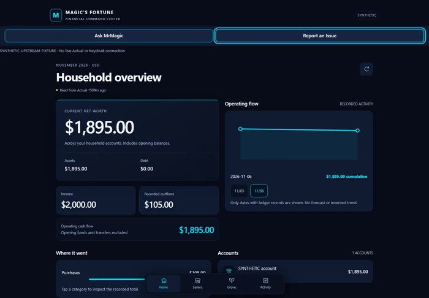

CAD / 3D / DIGITAL TWINS
Magic’s Design Studio
RESEARCH & PLANNINGCAD workflow and industrial reconstruction research informed by professional modeling experience.
Explore Magic’s Design Studio ↗DANIEL KAVANAGH · ENGINEERING EXPERIENCE + MRMAGIC SUITE
Engineering design, CAD systems and technical project delivery since 2005, and a growing family of personal MrMagic applications that I direct, test and refine with AI-assisted development.
An early engineering milestone from my previous employment: manufacturing and exterior-site modeling, with the architectural framework by the in-house facilities engineer.
WORKSPACE 01 · PROFESSIONAL ENGINEERING


WORKSPACE 02 · MRMAGIC SUITE
Ask MrMagic help is built into Fitness, Decision Desk and Fortune’s Grove & Gild
FEATURED ENGINEERING SOFTWARE
Find the record. Understand the evidence.
A searchable catalog of engineering file information. Records keep their origins and show what still needs checking.
Tested file-information workflows · Windows test package · personal project
SELECTED WORK / CLEAR DEVELOPMENT STATUS
The MrMagic Suite is a family of personal, noncommercial projects. These applications are not offered for sale, commercial licensing or public use.
All project areas shown
CAD / 3D / DIGITAL TWINS
CAD workflow and industrial reconstruction research informed by professional modeling experience.
Explore Magic’s Design Studio ↗HARDWARE / OBSERVABILITY
A personal dashboard for a mining computer’s graphics-card readings. Approved design shown; session controls are not installed.
Explore Magic’s Mining Command ↗
MARKET DATA / PAPER TRADING
Practice crypto decisions with pretend money: review the market, compare a decision and study a simulated trade. Real-money trading is disabled. Image: 9 November snapshot.
Explore Magic’s Decision Desk ↗PERSONAL iOS / HARDWARE
Workouts, body trends, goals and nutrition on iPhone, with built-in Ask MrMagic help. MrMagic Fitness successfully installed and launched on two iPhones through Apple TestFlight — November 10, 2026. More than 60 pounds lost: a personal achievement that gives this project purpose.
Explore Magic’s Fitness Companion ↗Read the iPhone update milestone ↗
PERSONAL FINANCE / PRIVACY
A private household-finance app with Grove & Gild, a small-business section for a family boutique. Shown only with fictional records.
Explore Magic’s Fortune ↗ASK MRMAGIC · ACROSS THE SUITE
Ask MrMagic is the family name for the help built into the MrMagic apps. Today each app answers from its own guide or records, without generative AI. A single assistant that works across all apps is the next step.

How-to answers from the app’s own guide, on the iPhone. No health records are read and no question leaves the device.
An “Ask Magic” drawer on every page answers from recorded market data and labels each fact as recorded, calculated or an estimate. It declines requests to buy, sell or cancel. AI-written answers are not enabled.
Explore Decision Desk ↗How-to help on every Grove & Gild screen plus six business questions, without AI. It ships with the Grove & Gild version that is prepared but not yet in daily use.
See Grove & Gild ↗Ask about fitness while in Fortune, or paper trading while in Fitness. Each answer would respect who is asking, their permission, the source and how recent it is. This connection has not been built or demonstrated.
Try Ask MrMagic on this site ↓ASK MRMAGIC · ON THIS WEBSITE
Ask about Daniel’s engineering experience, the historical digital twin, each MrMagic app and what works today. Every answer comes from this website’s public pages and links to its source.
How it works: your question is matched in your browser against a fixed set of public answers. It is not a generative AI service, it cannot see private app data, and nothing you type is stored or sent.
Choose an example or type a question. Answers come only from this website’s public pages.
DIRECTION / REVIEW / RELEASE CONTROL
I direct AI-assisted engineering and software development across Windows and macOS, including remotely from my iPhone. I define requirements, coordinate specialized AI agents, review designs and test results, direct corrections, and approve release decisions. AI agents perform implementation; I guide and validate the work.
Behind the build ↗Occasional project updates. Email confirmation required; unsubscribe anytime.
Subscribe to Project Updates ↗Milestones & RSS ↗